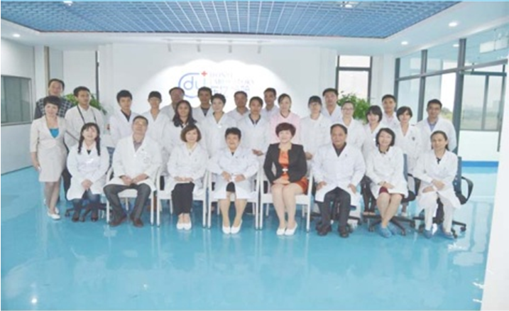

深圳东亿医学检验所是深圳市东亿健康服务有限公司旗下的独立医学实验室，是第三方医学检测服务企业。自2012年建设至今，全体员工 不懈努力，对技术精益求精，将其打造成为病理、检验、临床基因检测、分子病理、遗传、科研服务为主题的综合性实验室。
深圳东亿医学检验所座落于深圳市坪山新区国家生物基地，设立有临床医学检验、临床基因检测、组织病理、细胞病理、分子病理等11 个专业实验室，依照欧美独立实验室与国内独立实验室双向管理模式，引进国际质量控制标准，拥有国内外高端技术人才与学科团队，应用先进 设备、一流技术，为患者提供优质、高效、安全的医疗检测疾病诊断、医学检测和预防保健服务。
本机构可开展检测项目近千项，可为我省各家医疗机构提供医学检验服务。本医疗机构始终坚持质量至上的宗旨，致力于高标准高质量 服务于临床，为医疗事业发展贡献力量。